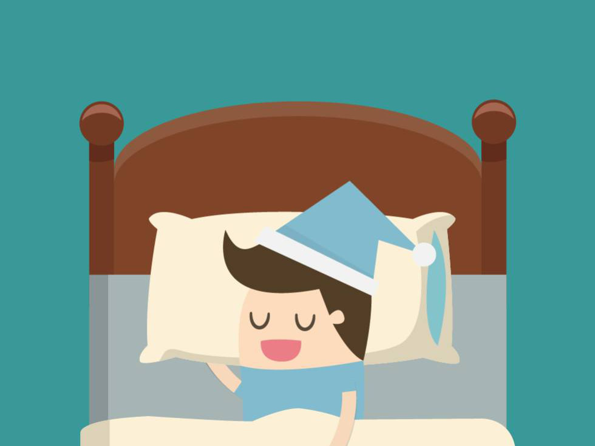
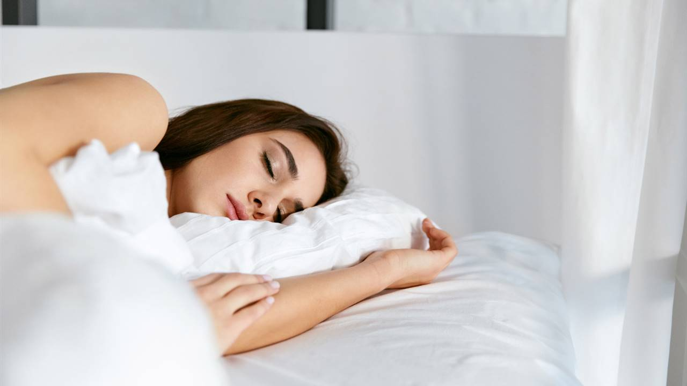

Importancia del sueño en el ser humano
El sueño y su salud
Conforme la vida se vuelve más agitada, es mucho más fácil pasar más tiempo sin dormir. De hecho, muchos estadounidenses solo duermen 6 horas o menos por noche. Necesita muchas horas de sueño para restaurar su cerebro y su cuerpo. No dormir lo suficiente puede ser malo para su salud en varias formas.
Anthony Duffis
Anthony Duffis

Los beneficios de dormir
Por supuesto que dormir hace que uno se sienta descansado todos los días. Sin embargo, mientras uno duerme, no solamente la mente y el cuerpo se apagan. Durante la noche, los órganos y los procesos internos trabajan arduamente. "El dormir mantiene todos los aspectos del cuerpo de una forma u otra: el equilibrio energético y molecular, así como también la función intelectual, el estado de alerta y el humor", explica el Dr. Merrill Mitler, experto en sueño y neurocientífico del NIH. Cuando uno está cansado, no tiene el mejor rendimiento posible. El dormir ayuda a pensar con más claridad, a tener mejores reflejos y a concentrarse mejor. "La realidad es que cuando observamos a alguien que ha descansado bien, esa persona está operando a un nivel distinto que quienes intentan seguir con una o dos horas de sueño por noche", cuenta Miller. "La pérdida de sueño daña los niveles superiores de razonamiento, resolución de problemas y atención a los detalles", explica Miller. Las personas que están cansadas tienden a ser menos productivas en el trabajo. Tienen más posibilidades de sufrir accidentes de tránsito. La falta de sueño también influye sobre el humor, que puede afectar la manera en que uno interactúa con otros. El déficit de sueño, con el paso del tiempo, incluso puede incrementar el riesgo de sufrir depresión.
La investigación demuestra que la falta de sueño aumenta el riesgo de padecer obesidad, enfermedades del corazón e infecciones. Durante la noche, la frecuencia cardíaca, la frecuencia de respiración y la presión arterial suben y bajan, un proceso que puede ser importante para la salud cardiovascular. Mientras duerme, el cuerpo libera hormonas que ayudan a reparar las células y a controlar el uso de la energía que hace el cuerpo. Estos cambios hormonales pueden afectar su peso corporal. "Investigaciones actuales demuestran que una falta de sueño puede producir condiciones parecidas a la diabetes en personas que de otro modo son saludables", cuenta Mitler. En estudios recientes se ha descubierto que el sueño puede afectar la eficacia de las vacunaciones. Twery describió investigaciones que demuestran que las personas que descansaban bien y recibían la vacuna contra la gripe desarrollaban una protección más fuerte contra la enfermedad.
La importancia de dormir bien para vivir mejor
Seguro que te suena eso de “solo he dormido cinco horas”, “nunca tengo tiempo para dormir la siesta” o “hace días que no descanso bien”. Lo peor es que, en general,le damos poca importancia al hecho de dormir –o descansar–.Sin embargo, la falta de sueño tiene muchos efectos secundarios, e incluso podemos desarrollar problemas a nivel metabólico, inmunológico y psicológico, entre otros. Según un estudio de la Fundación Nacional del Sueño de Estados Unidos, los adultos menores de 65 años deben dormir entre siete y nueve horas para rendir plenamente en sus actividades diarias. Además, dormir bien influye también en la prevención de ciertas enfermedades. Por ejemplo, está demostrado que para el mismo universo que el dato anterior (hombres menores de 65 años) dormir un mínimo de seis horas* al día reduce un 29% el riesgo de desarrollar cáncer de próstata.
Cómo conseguir un sueño de calidad
1- Evita tomar alcohol o cualquier bebida estimulante unas horas antes de dormir. Intenta no comer nada tres horas antes de ir a la cama, de forma que tu cuerpo ya haya hecho la digestión al acostarte.
2- Ya sabemos que vivimos conectados, pero se recomienda no mirar ninguna pantalla luminosa (móvil, tableta, televisión, ordenador…) una hora antes de ir a dormir.
3- A veces nos cuesta despertarnos por la mañana y alargamos el momento de levantarnos. Sin embargo, lo mejor para la salud es hacerlo en cuanto suena la alarma. De esta manera, evitamos la sensación de cansancio debido a que nuestro cerebro no habrá empezado un nuevo ciclo de sueño.
4- Si vas a realizar deporte, no olvides hacerlo antes de las 19 horas para que tu cuerpo no se active demasiado como para no dejarte dormir por la noche.
5- La siesta es buena. Previene cardiopatías, reduce la tensión arterial, aumenta la concentración y te hace recuperar horas de sueño, entre otros beneficios. Eso sí, se recomienda no superar los 30 minutos de siesta y hacerlo entre las 13 y las 17 horas, a poder ser en un espacio cómodo y agradable.
Ciclos del sueño
Los ciclos del sueño son unos periodos de tiempo en los que tienen lugar las diferentes fases de nuestro sueño. Y es que el sueño está dividido en 5 fases. Cuando se dan de manera continuada se dice que hemos completado un ciclo de sueño. Y cada ciclo de sueño dura entre los 90 y 110 minutos. Sabemos a lo largo de la noche tienen lugar de 4 a 6 ciclos completos de sueño. En el mejor de los casos. Las fases del sueño que se cumplen en cada ciclo son:
Fase I. Tiene lugar desde que comenzamos a sentir somnolencia. Los músculos de nuestro cuerpo comienzan su relajación y la actividad cerebral es más lenta.
Fase II. Luego de que el cuerpo se relaja, las ondas cerebrales empiezan a volverse más lentas.
Fase III y IV. Acto seguido, nos metemos en la fase III y IV, que se denominan sueño lento. En estas fases tiene lugar el sueño profundo y más reparador.
Fase V. Y, por último, llegamos a la fase REM, esa en la que se dan movimientos oculares rápidos. Gracias a los estudios polisomnográficos sabemos que en esta última fase tienen lugar la mayor parte de los sueños.
Pues bien, la calidad de nuestro sueño depende en gran medida de la cantidad de ciclos que completamos cada noche. Podemos despertar en cualquiera de las fases. Cuando esto ocurre, se interrumpe el ciclo; y, por tanto, el ciclo del sueño comienza de nuevo desde la fase I. Con la consecuencia de que no existe relajación o recuperación de energía. Por ese motivo, es más interesante dormir por ejemplo 4 ciclos completos, a dormir 6 ciclos parciales con microdespertares. Esto sucede porque cada fase del sueño desempeña un papel importante a nivel fisiológico. Y los necesitamos todos para recuperarnos y tener una buena calidad de vida.
Lo que pienso
A veces buscamos maneras de escapar del cansancio que tenemos, y con esta informacion ahora sabemos muy bien que hacer para conservar una mejor salud fisica y mental en cuanto a descanso se trata. Por supuesto sabiendo que hay cosas que debemos y cosas que no debemos hacer para mejorar drasticamente nustras vidasy por supuestodar ejemplo a los demas
Esperemos el video que dejo al lado te ayude a dormir de manera eficiente
Busquemos siempre la manera de descansar lo suficiente, por su puesto la alimentacion importa, por ende come bien y toma mucha agua. Chau.